TX9
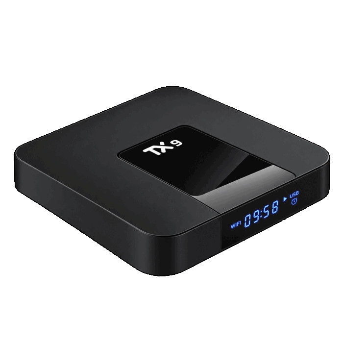
Placa P281 · 4 núcleos Cortex-A53 · 1 GB de RAM · eMMC de 8 GB
Instalador publicado
Usuário e senha padrão dos sistemas Linux: compsteam / compsteam. Troque a senha no primeiro acesso.
IFSC · Software livre para a escola
Três caixinhas, três chips diferentes, um só jeito de instalar: pela própria TV. TV boxes que iriam para o lixo viram computadores para o laboratório da escola, sem abrir o aparelho e sem precisar de PC.

Placa P281 · 4 núcleos Cortex-A53 · 1 GB de RAM · eMMC de 8 GB
Instalador publicado
Usuário e senha padrão dos sistemas Linux: compsteam / compsteam. Troque a senha no primeiro acesso.
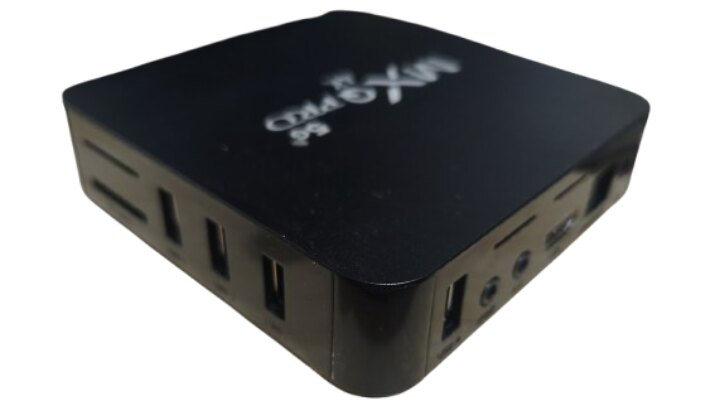
Placa R329Q V8.0 · 4 núcleos Cortex-A7 · 1 GB de RAM · NAND de 8 GB
Instalador em breve
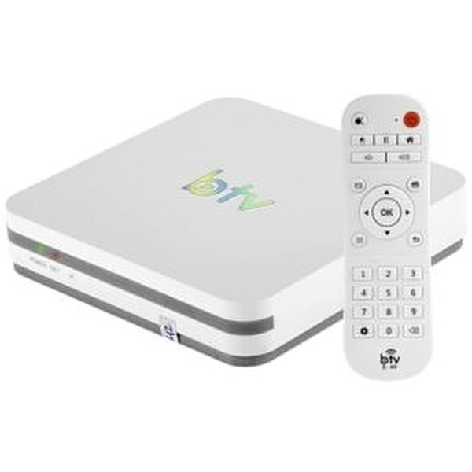
Foto de divulgação do aparelho.
Placa X3BL46_V2.0 · 4 núcleos Cortex-A55 · 2 GB de RAM · eMMC de 16 GB
Instalador em breve
O botão tracejado quer dizer que ainda não há instalador público para aquele aparelho. As imagens estão em teste na bancada do projeto.
O que é
O CompSTEAM transforma TV boxes baratas, que viram lixo eletrônico, em computadores para laboratórios de escolas. Há um Android TV e várias variações de Linux, todas instaláveis pela própria TV.
Hardware que já existe ganha uma segunda vida na sala de aula, em vez de virar resíduo.
Pensado para professores e técnicos: programação em blocos, GeoGebra, Arduino, Python e escritório.
Blocos e GeoGebra funcionam offline. A rede só é usada na instalação e quando você quiser.
Android (LineageOS) e Linux Debian, com instalação segura: o bootloader de fábrica nunca é trocado.
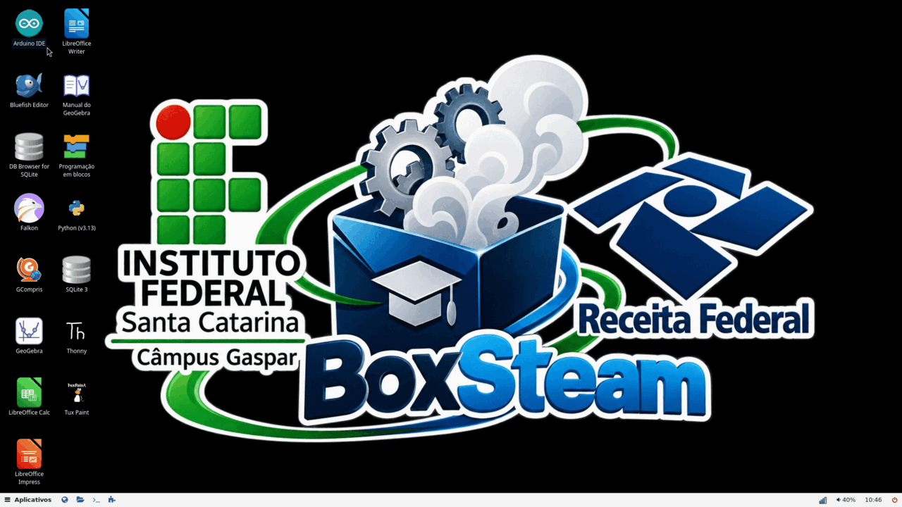
Na prática
Boxes com CompSTEAM no laboratório: controlam impressoras 3D com Klipper, leem sensores em projetos dos alunos e servem de computador na bancada. O trabalho foi publicado como artigo científico.
Sistemas por aparelho
Você não baixa as imagens à mão: o instalador mostra a lista na TV e baixa a que você escolher. Aqui está o que existe para cada aparelho, com a versão mais nova e o estado de cada sistema.
| Sistema | Família | O que traz | No GitHub | Mais nova na bancada | Estado |
|---|---|---|---|---|---|
| CompSTEAM Educação | Linux | Debian 13 com blocos (TurboWarp), GeoGebra offline, Arduino IDE, Thonny, LibreOffice e GCompris. Requer o instalador 1.2.44 ou mais novo.Ver a release | 1.3.12 | 1.3.12 | Publicado |
| CompSTEAM Linux Área de Trabalho | Linux | Debian 13 com labwc: área de trabalho leve, painel, navegador e gerenciador de arquivos.Ver a release | 1.2.67 | 1.2.69 | Publicado |
| CompSTEAM Linux Gráfico | Linux | Debian 13 com Weston: Chromium e terminal.Ver a release | 1.2.67 | 1.2.68 | Publicado |
| CompSTEAM Linux | Linux | Debian 13 em linha de comando, com Docker.Ver a release | 1.2.67 | 1.2.68 | Publicado |
| CompSTEAM Mínimo | Linux | Alpine Linux: o menor possível, em linha de comando, com Docker.Ver a release | 1.2.67 | 1.2.68 | Publicado |
| CompSTEAM TV | Android TV | Android 15 (LineageOS 22.2, não oficial) com interface de TV e os aplicativos do CompSTEAM. | ainda não | 1.1.60 | Só na bancada |
| Sistema | Família | O que traz | No GitHub | Mais nova na bancada | Estado |
|---|---|---|---|---|---|
| CompSTEAM Educação | Linux | Debian com os programas da aula. Precisa do novo desenho de partições da NAND (veja a seção Partições). | ainda não | 0.2.37 | Em teste |
| CompSTEAM Linux Área de Trabalho | Linux | Debian com labwc: painel, arquivos e navegador. A versão da bancada testa o logo e a barra de progresso na partida. | ainda não | 0.2.38 | Em teste |
| CompSTEAM Linux Gráfico | Linux | Debian com interface gráfica.Ver a release | 0.2.20 | 0.2.37 | Publicado |
| CompSTEAM Linux | Linux | Debian em linha de comando.Ver a release | 0.2.20 | 0.2.37 | Publicado |
| CompSTEAM Mínimo | Linux | Alpine Linux, o mínimo possível.Ver a release | 0.2.20 | 0.2.37 | Publicado |
O MXQ Pro não tem Android do CompSTEAM. O Ubuntu foi deixado de lado: a versão 0.2.20 continua na release antiga e não terá novidades.
| Sistema | Família | O que traz | No GitHub | Mais nova na bancada | Estado |
|---|---|---|---|---|---|
| CompSTEAM TV | Android TV | Android 15 (LineageOS 22.2, não oficial), kernel 4.9, instalado na memória interna pelo instalador de rede. Candidata à primeira versão. | ainda não | 0.1.13 | Em teste |
| CompSTEAM Educação | Linux | Debian 13 com blocos, GeoGebra, Arduino, Thonny, LibreOffice e GCompris. | ainda não | 0.1.7 | Em teste |
| CompSTEAM Linux Área de Trabalho | Linux | Debian 13 com labwc: painel, arquivos, Chromium, Docker e Wi-Fi. | ainda não | 0.1.7 | Em teste |
| CompSTEAM Linux Gráfico | Linux | Debian 13 com Weston, Chromium, Docker e Wi-Fi. | ainda não | 0.1.7 | Em teste |
| CompSTEAM Linux | Linux | Debian 13 em linha de comando, com Wi-Fi e Ethernet. | ainda não | 0.1.7 | Em teste |
| CompSTEAM Mínimo | Linux | Alpine Linux com Wi-Fi e Ethernet, o menor possível. | ainda não | 0.1.7 | Em teste |
Todas as releases · detalhes dos sistemas. Todas as variações de Linux trazem Docker, Wi-Fi, git, vim e htop.
Como instalar
Você precisa de um aparelho, um cartão microSD ou pendrive em FAT32, cabo de rede com internet, TV no HDMI, um palito para o botão reset e o controle remoto (ou teclado e mouse USB). Hoje só o TX9 tem instalador público.
Na página da release, baixe instalador-publico-tx9-1.2.45.zip.
Descompacte tudo na raiz do cartão, sem criar pasta. Não deixe nele os arquivos aml_autoscript nem aml_sdc_burn.ini.
Cabo de rede, TV no HDMI e o cartão no leitor. Só depois a fonte.
O botão fica no fundo do box, dentro de um furo. Use o palito, segure e ligue a fonte. Solte depois de cerca de 5 segundos.
A lista mostra os sistemas disponíveis no GitHub. Use as setas e OK. O instalador é o mesmo para todos.
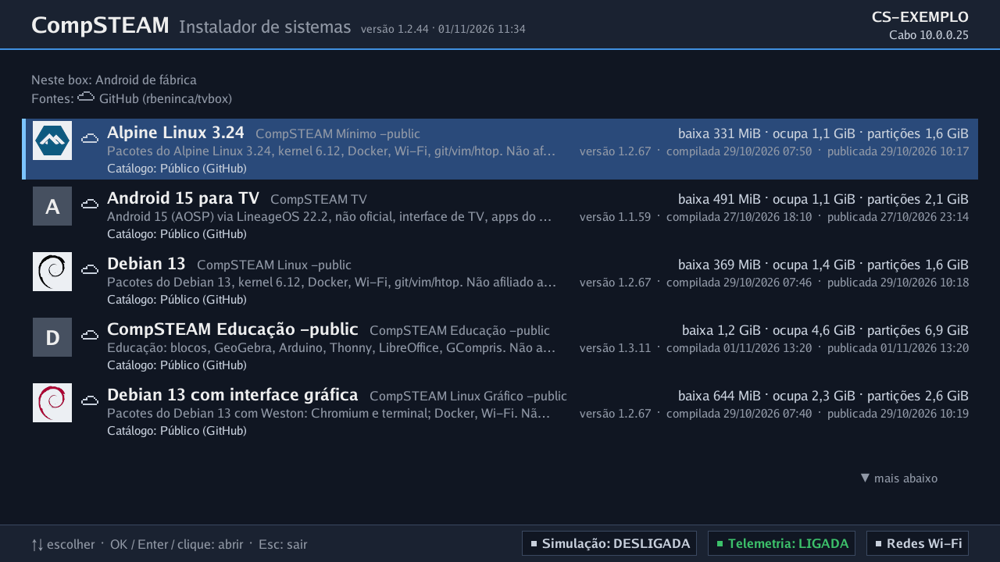
Se o box já tem um CompSTEAM, escolha Atualizar (guarda a pasta de dados) ou Instalação limpa (apaga tudo).
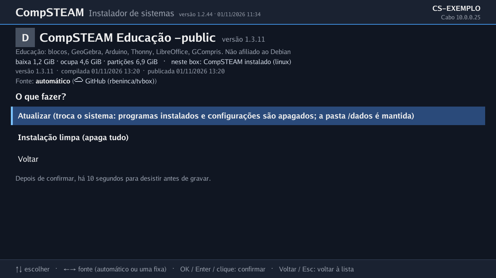
Você tem 10 segundos para cancelar. Depois o instalador grava a memória do box, de 2 a cerca de 20 minutos. Não desligue.
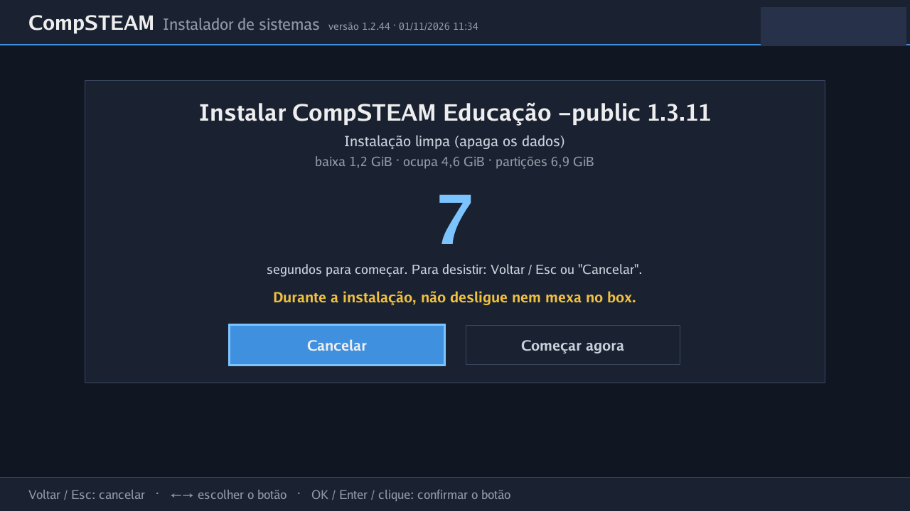
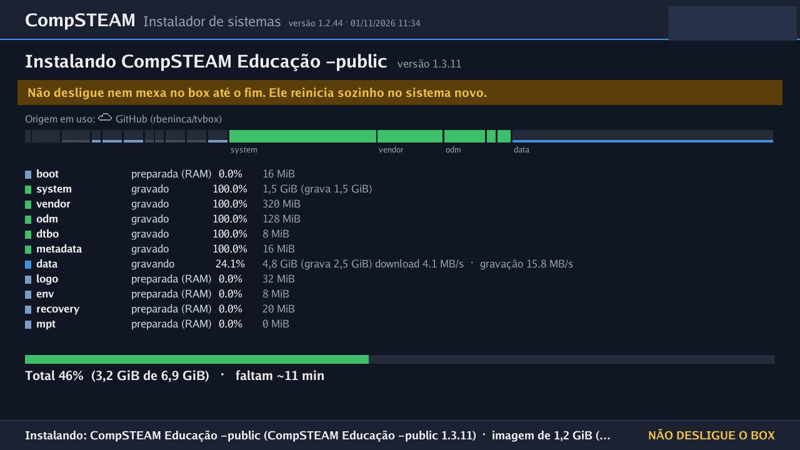
Tudo gravado e conferido, o box reinicia sozinho no sistema novo. Tire o cartão ao terminar: com ele no box, o instalador do cartão é sempre o que abre.
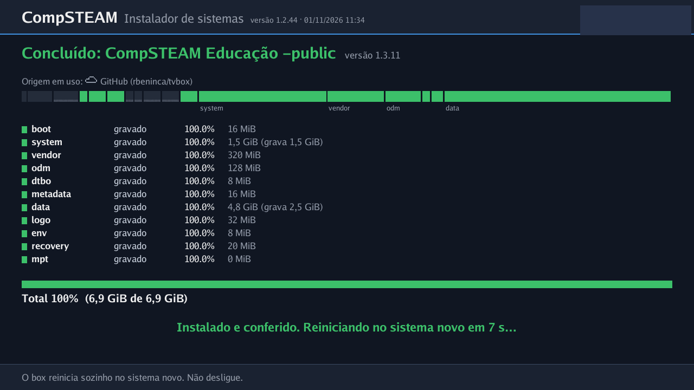
compsteam-reserved. Antes de gravar, o instalador copia para o cartão a identidade única do aparelho (a partição reserved). Guarde essa pasta. O cartão não pode estar protegido contra escrita; sem a cópia, nada é gravado.Instalador público em breve. É o mesmo programa do TX9, com os sistemas desta placa. Só a tela da lista de sistemas está pronta para mostrar; as outras telas do MXQ ainda não foram capturadas.
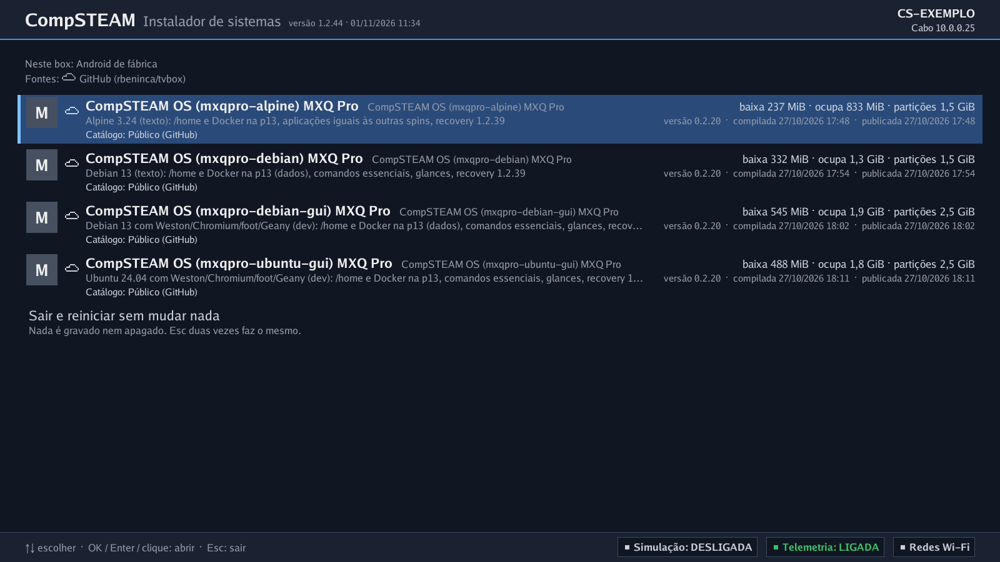
Instalador público em breve. Em preparação: ainda não há telas públicas desta instalação. Quando houver, aparecem aqui, com o mesmo passo a passo.
Hardware
Nem tudo funcionou de primeira. Aqui está o que resolvemos, o que está parcial e o que ainda não foi testado. Cada célula diz o nome do componente e o estado, com ícone e palavra (a cor só reforça).
| Aparelho | Chip (SoC) | RAM | GPU | Rede cabeada | Wi-Fi | Controle IR | Vídeo HDMI | Áudio |
|---|---|---|---|---|---|---|---|---|
| TX9 | Amlogic S905W, 4× Cortex-A53Resolvido | 1 GB DDR3ResolvidoA fábrica anuncia 4 GB; o real é 1 GB. | Mali-450, driver livre (lima), OpenGL ES 2.0Resolvido | Ethernet 10/100Resolvido | SSV6051 (iComm), 2,4 GHz, driver do projetoResolvidoCorrigimos a calibração IQ em outubro de 2026: o envio saiu de 0,1–9 para 40–47 Mbit/s. | Receptor NEC estendido, 13 teclasResolvido | HDMIResolvido | Saída de áudioResolvidoConferido na bancada. |
| MXQ Pro | Rockchip RK3229, 4× Cortex-A7Resolvido | 1 GB DDR3ResolvidoA fábrica anuncia 4 GB; o real é 1 GB. | Mali-400, driver livre (lima)Resolvido3D a cerca de 40 quadros por segundo em teste. | Ethernet (controlador do chip, PHY de 100 Mbit)Resolvido | SSV6006C, 2,4 GHz, driver ssv6x5xResolvidoAssocia e recebe endereço. O arquivo de descrição da placa de fábrica aponta outro chip; o nosso corrige. | Receptor por GPIO, NEC, mapa de 8 controlesParcialFunciona; falta conferir qual dos 8 mapas vale para cada controle. | HDMIResolvido | HDMI e saída analógica (AV)ResolvidoConferido na bancada. |
| BTV11 | Amlogic S905X3, 4× Cortex-A55Resolvido | 2 GBResolvido | Mali-G31, driver livre (Panfrost)Resolvidoglmark2 entre 124 e 167 pontos. | Ethernet 100 Mbit (PHY interno)Resolvido94 Mbit/s medidos; o PHY negocia só 100. | AP6212 (BCM43430), SDIO, 2,4 GHzResolvidoAssocia em cerca de 2 s. O Bluetooth é do mesmo chip. | Receptor IRNão testadoO LED de IR pisca com o controle; as teclas ainda não foram testadas. | HDMIResolvidoNo Android, o modo de vídeo é filtrado pela TV; há ressalva entre 720p e 1080p. | Som pelo HDMINão testadoAinda não testado. |
O que quer dizer “Parcial”: no MXQ, o controle IR responde mas o mapa final não foi conferido. No BTV11, o controle IR e o som pelo HDMI ainda não foram testados. Outros itens: o TX9 tem display frontal (controlador FD6551); o BTV11 não tem display, só LEDs; o MXQ não tem display frontal.
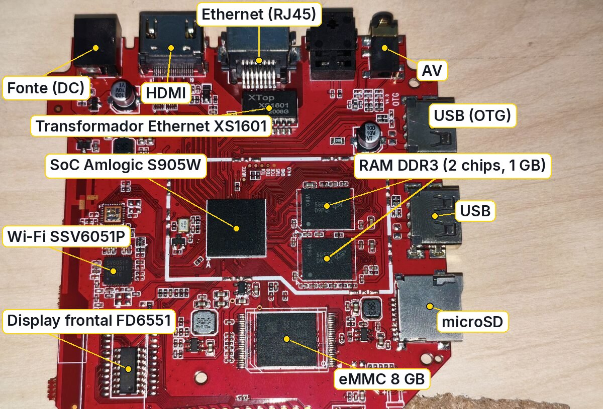
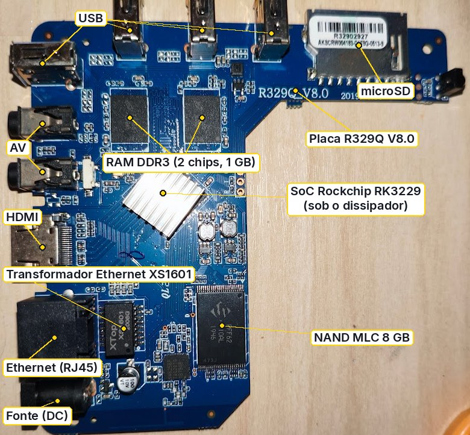
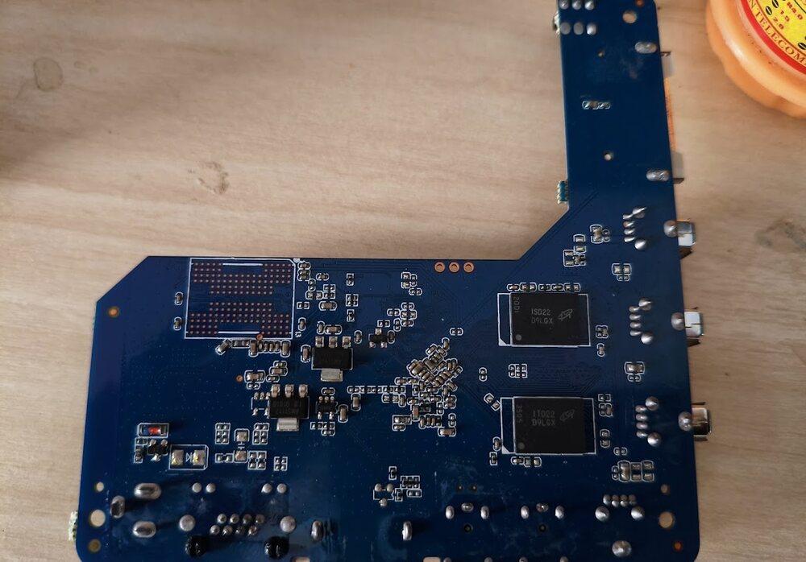
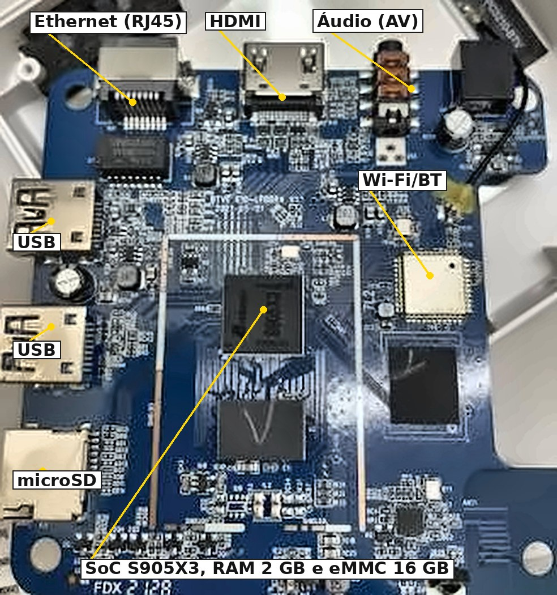
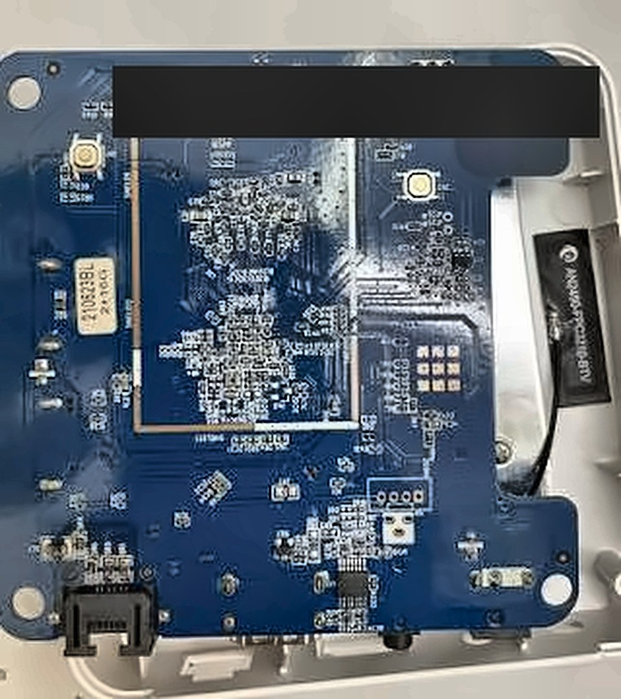
As fotos das placas são do acervo do projeto; etiquetas com o endereço de cada aparelho foram cobertas. Ver docs/hardware.md.
Testes de temperatura
Caixa fechada, chip pequeno e nenhum ventilador. Medimos para saber até onde dá para pedir. A boa notícia: sob carga máxima, nenhum box chegou perto de queimar, e o sistema se protege sozinho reduzindo a velocidade (o “clock”) quando passa do limite.
Mesma carga (4 núcleos a 100 %). O TX9 de uma caixa empilhada, sem ventilação, chegou a 89 °C e o clock caiu para 250 MHz; as demais ficaram abaixo do limite de cada uma.
O BTV11 é o mais folgado: de 45 °C parado a cerca de 74 °C sob carga. O TX9 e o MXQ Pro chegam perto de 80 °C.
Barra clara e tracejada: parado (mediana). Barra cheia: sob carga (máximo).
Todas as barras são do MXQ Pro: claro e tracejado é antes, cheio é depois. As duas primeiras são com o box parado.
Apagar a tela quando ninguém olha tira de 6 a 10 °C do MXQ Pro parado. E a forma de tocar vídeo pesa mais que o vídeo: o mesmo arquivo perdeu 41 % dos quadros no Chromium e 0,05 % no GStreamer, 6 °C mais frio.
O MXQ Pro de fábrica reduzia o clock já a 70 °C, cedo demais. Subir o ponto de redução para 85 °C deu 27 % mais trabalho em 5 minutos (e até 50 % em outra unidade), com cerca de 12 °C a mais e sem travar nem reiniciar.
Esquema de partição
A memória interna é como um armário com gavetas. Cada gaveta tem um dono e algumas nunca abrimos. Cada barra está em escala própria (os totais são diferentes); não compare o comprimento entre as barras.
O bootloader de fábrica nunca é gravado. O instalador mora numa partição própria. A identidade e o agente do inventário ficam em partições que nenhuma instalação apaga.
As partições vêm de uma tabela proprietária (MPT), escrita a partir do DTB. A raiz Linux pode juntar até seis partições do Android com o dm-linear do kernel (perfis 5a, 5b e 5c); o volume 5b soma 6988 MiB.
Depois das áreas de fábrica, o Linux usa duas partições comuns: uma pequena em FAT32 com kernel, DTB e initramfs (p1) e uma ext4 com a raiz (p2). Decidimos acrescentar uma p3 de 40 MiB no fim para identidade e agente; entra com a próxima versão e nem todos os boxes de teste a têm ainda.
A NAND tem uma camada de tradução (FTL) e a tabela vem de um parâmetro de fábrica que nunca gravamos; só renomeamos as partições do lado do Linux. No novo desenho aprovado, o /home (p13) tem 1536 MiB e a raiz (p14) fica com o restante. A Educação do MXQ precisa deste desenho.
| Partição | Início | Tamanho | Para que serve |
|---|---|---|---|
bootloader | 0 | 4 | U-Boot de fábrica (nunca gravado) |
reserved | 36 | 64 | MPT, chaves e DTB; identidade do box |
cache | 108 | 64 | logs e atualizações |
env | 180 | 8 | variáveis do U-Boot |
logo | 196 | 32 | imagem de abertura |
recovery | 236 | 32 | instalador de rede |
rsv | 276 | 8 | configuração e redes Wi-Fi |
tee | 292 | 8 | ambiente seguro de fábrica |
crypt | 308 | 32 | agente do inventário |
misc | 348 | 32 | comando de boot |
boot | 388 | 32 | kernel e DTB |
system | 428 | 1580 | raiz do sistema |
vendor | 2016 | 320 | Android: /vendor |
odm | 2344 | 128 | Android: /odm |
dtbo | 2480 | 8 | Android: DTB extra |
metadata | 2496 | 16 | Android: metadados |
data | 2520 | 4936 | dados / parte da raiz Linux |
Mais detalhes, a MPT e o MXQ Pro em docs/particoes.md.
Como um TV box acorda
Um personagem leva um bilhete de etapa em etapa, do botão de ligar até o sistema. Escolha o chip, aperte Tocar ou ande quadro a quadro. Cada quadro leva o selo visto no box (medimos por UART, log ou USB) ou deduzido (vem da documentação do fabricante).
A energia chega ao chip. No TX9 o display frontal acende.
O “porteiro” de fábrica, gravado dentro do chip, só sabe uma coisa: onde procurar o próximo bilhete (cartão, USB ou memória interna).
A SRAM é uma mesinha minúscula dentro do chip; por isso o primeiro estágio é pequeno (cerca de 48 KB no TX9, tamanho que medimos na imagem).
A RAM é um chip à parte e precisa ser ensinada a conversar. Só depois dela cabe um bilhete grande. O TX9 tem 1 GB.
Entram o código de segurança (cerca de 178 KB no TX9) e o U-Boot de fábrica (cerca de 410 KB). Os tamanhos medimos na imagem; os nomes dos estágios vêm da documentação.
Ele lê o ambiente e pergunta: botão reset apertado ou cartão com instalador? Se sim, entra no instalador do CompSTEAM. Senão, lê a partição do sistema. O U-Boot de fábrica fica como está.
O U-Boot coloca o kernel e a “planta da casa” (o DTB) na RAM e salta para o kernel.
Os drivers acendem as luzes: rede cabeada, Wi-Fi, GPU Mali.
O logo do CompSTEAM aparece na TV com uma barra de progresso, e depois o sistema ou a tela de login.
Com o cabo no PC, o box entra em modo de gravação. São duas portas diferentes: a USB da BootROM (gravação de fábrica, deduzida) e a USB do U-Boot, o “modo USB” que usamos, que vimos funcionar.
A energia chega ao chip RK3229.
Dentro do chip, o porteiro procura o primeiro estágio no começo da memória interna (ou do cartão SD). Nunca vimos a BootROM; só o que veio depois dela.
Um programa da Rockchip treina a RAM. Vimos esta linha pela UART, uma porta serial só de escuta.
O miniloader carrega o trust e o U-Boot. O trust de fábrica parava o box depois de cerca de 30 minutos; trocamos por um OP-TEE aberto e o box passou de 60 minutos sob carga.
Ele busca o DTB com o logo (resource), o kernel e o initramfs (boot), pela camada de tradução da NAND.
O U-Boot entrega o kernel e o DTB.
Ele carrega o driver da NAND e passa para a raiz Debian ou Alpine.
Logo do CompSTEAM, depois o sistema ou a tela de login.
Se o PC manda sinal pelo USB, a BootROM não lê o disco: vira um porteiro por USB. O PC passa a RAM e depois o programa, como uma criança passando bilhetes por baixo da porta. Usamos para testar um Linux só na RAM, sem gravar nada.
Modelo didático. O que vimos diretamente (UART, logs, USB) tem o selo “visto no box”; o que vem da documentação do fabricante tem o selo “deduzido”.
Como foi construído
Android 15 (LineageOS 22.2) compilado em contêiner Docker, com kernel 4.9 da Amlogic.
Variações com o kernel 6.12 do Debian, DTB gerado pelo projeto e GPU Mali com driver livre.
Um instalador de rede único, guardado numa partição própria, que baixa as imagens do GitHub.
Imagens assinadas com Ed25519 e conferidas por SHA-256 em cada partição. Arquivo alterado é recusado.
A telemetria vem desligada e só liga com o consentimento de quem está no box. Sem consentimento, nada é enviado.
O instalador nunca grava o bootloader nem a área de chaves. O modo USB do fabricante continua como rede de segurança.
Ler a história completa em docs/como-foi-construido.md · DTB e drivers
Documentação